| Each year, our town takes on a major
undertaking. We put on a huge quilt show that covers the entire town
with 100% volunteer effort. This year the show was in danger of
being cancelled due to Covid-19 restrictions. However, since it is
an outdoor show and naturally social distanced, it was allowed to
proceed.
I took a much larger volunteer role in this year's show than I have
previously. I took on the Registration Chair role and it was a full
time job for about six weeks. But I enjoyed the work and was so
happy to help put on this wonderful show. |
|
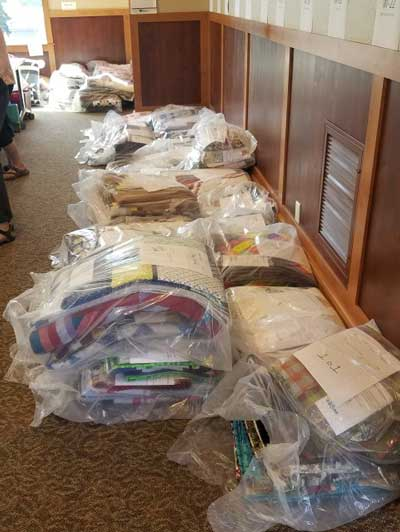 One of my favorite volunteer jobs is pre-sort. I help the team of
ladies |
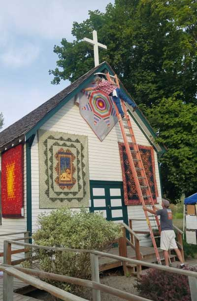 |
| I roped Eric into a volunteer role helping to hang and take down the
quilts. We worked with these two fellows hanging quilts on the high parts of the Historic Village. That man shown above had NO fear! He is hanging a quilt made by my beloved and now departed Gran, Wanda Morton. |
|
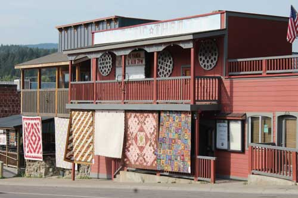 |
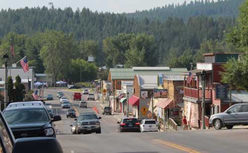 |
| Views of the show up and down the streets | |
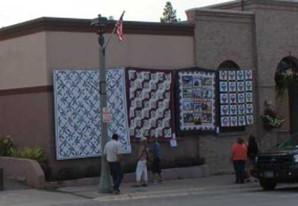 |
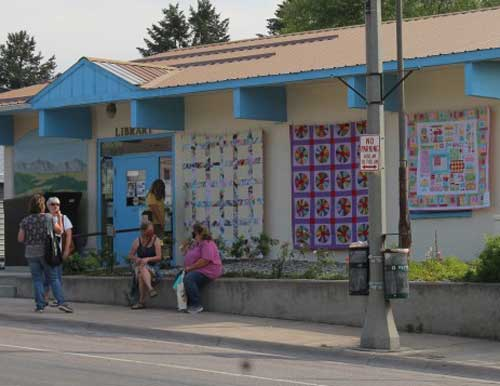 |
| The quilt at the far right in this shot was one of Gran's creations. | Also, the purple Dresden Plate in this shot was also made by Gran. |
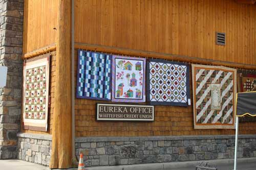 |
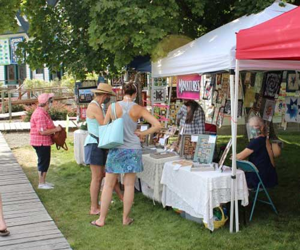 |
| The miniature booth. I don't think you'll ever find my work here, too intricate for me! | |
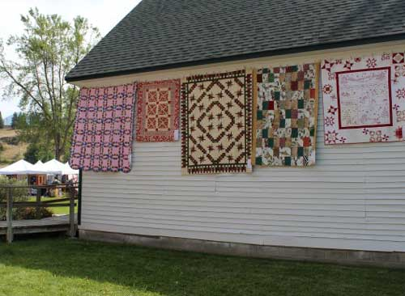 |
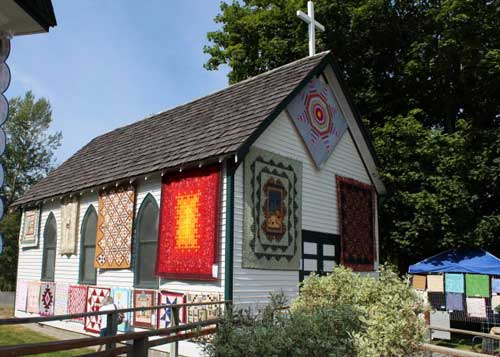 |
| The pink double wedding ring quilt on the left is one of Gran's. | The church again, I loved seeing Gran's Lone Star hanging there under the cross. |
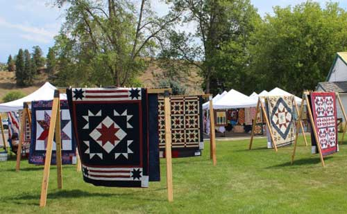 Bunny Franklin collects donation quilts for veterans. Here's a
view of her display with |
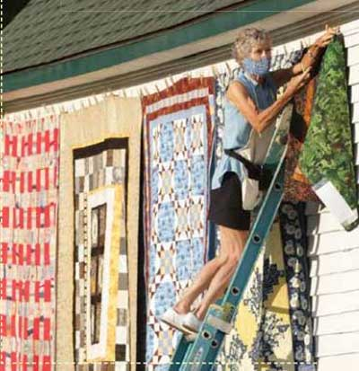 |
| Volunteer Michelle Butz hanging quilts. The red squares one behind her
is mine. This photo was published in the Tobacco Valley News. |
|
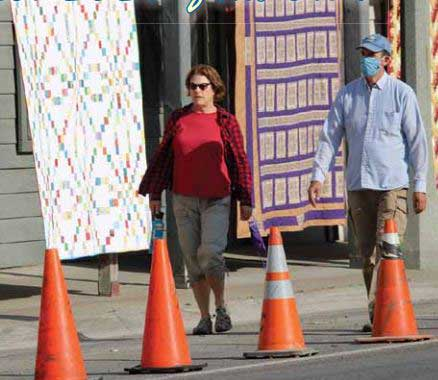 |
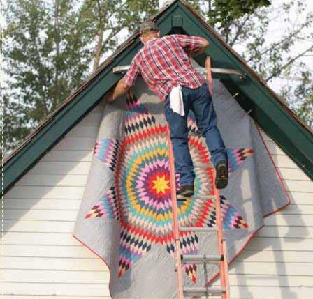 |
| This photo was published in the Tobacco Valley News. The purple and
gold quilt behind those people was mine. |
This photo was published in the Tobacco Valley News. Gran's Lone Star again, I love this quilt! |
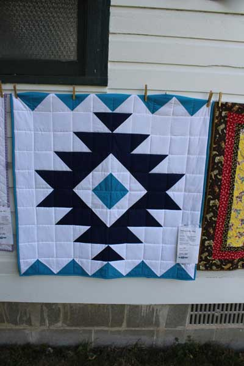 |
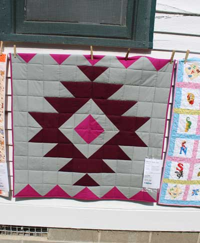 |
| My baby boy Native American quilt | My baby girl Native American quilt |
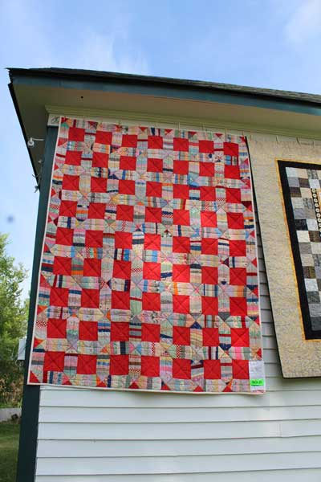 |
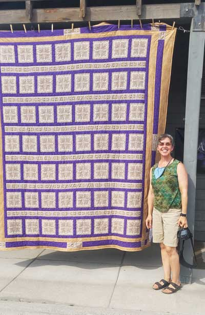 |
| This vintage top was one I bought at an estate sale and finished. I really loved how it turned out, it was so nice! |
This is a very heavy quilt at 9 pounds - it has batting and a blanket
back. It was made from vintage fabric I found at an estate sale. |
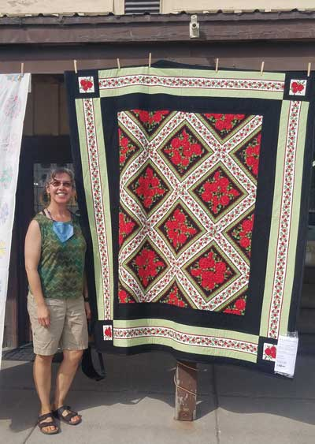 |
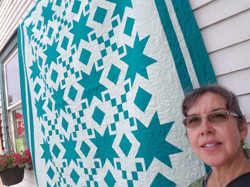 |
| My "Bright Roses" lap quilt. | I forget what I called this quilt, it's teal and the light fabric has a
wonderful sparkle. The backing is beautiful too, it's butterflies and flowers. I love this quilt. |
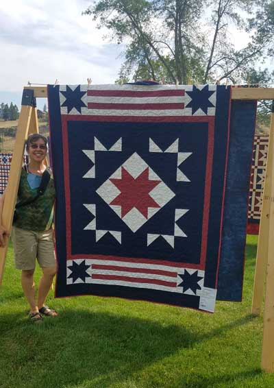 This pattern is called, "Yankee Doodle". It's my second quilt from this pattern. |
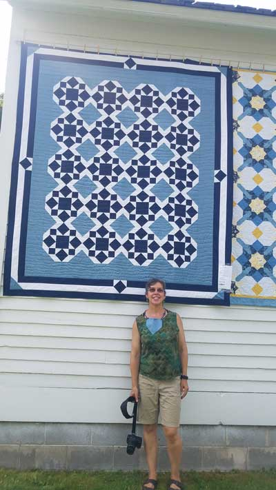 |
| This one also has sparkle fabric. It is now owned by my Uncle Tim Casazza (via Rose.) | |
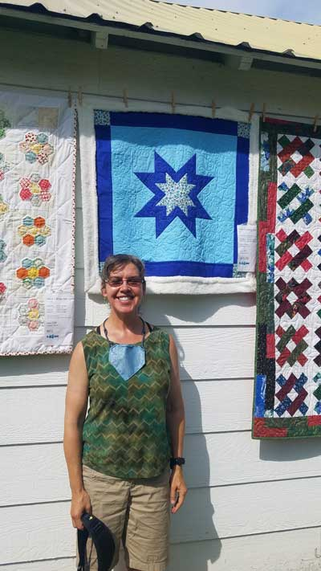 |
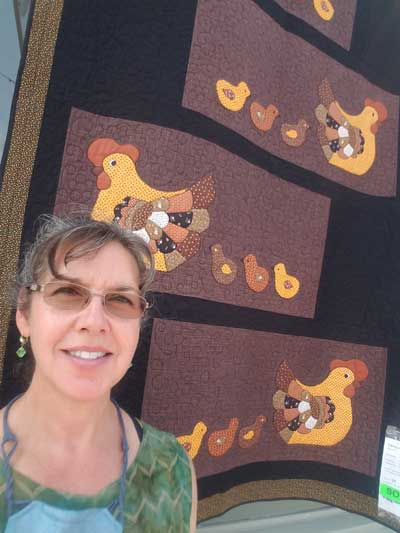 |
| This baby quilt has a super-soft Sherpa backing. Hanna Rose Casazza now owns this one (via Rose again!) |
This "Hens & Chicks" quilt of mine sold within the first few
minutes of the show. I hope the new owner loves it. I thought it turned out very cute! The chickens were cut from vintage fabric I found at an estate sale. |
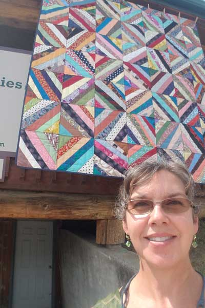 |
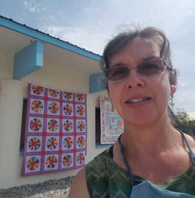 Gran's Dresden Plate |
| Here are the quilts of Gran's that I entered into the show. This is a
silk crazy quilt that I love. I can remember some of this fabric from Gran & Aunt Vi's dresses when I was a kid. |
|
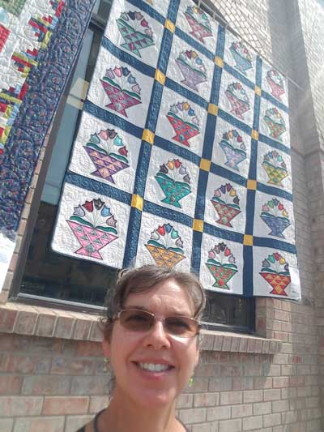 |
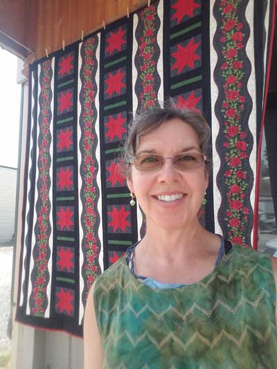 |
| Gran's Flower Basket | Another one of my quilts, this one is called, "Rivers of Roses" |